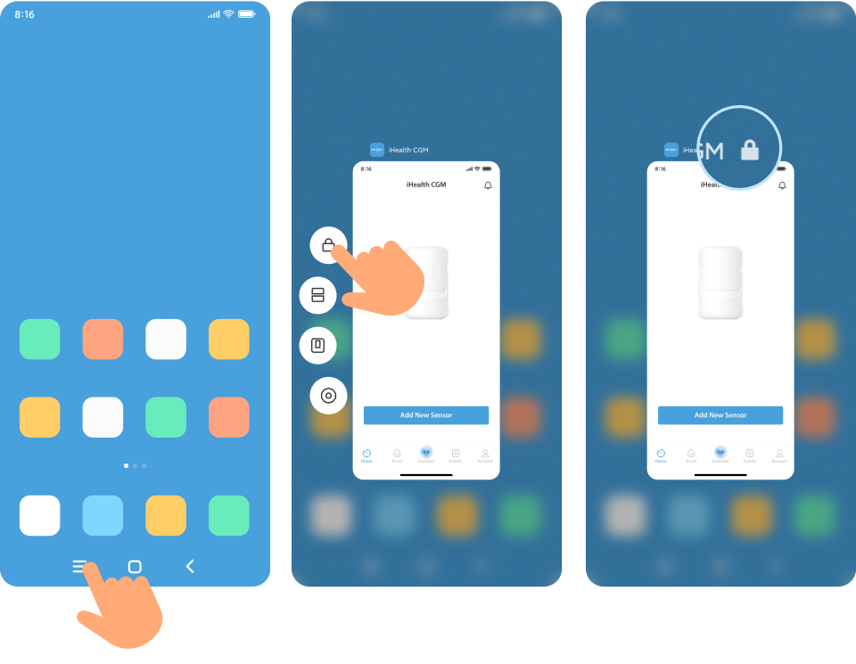
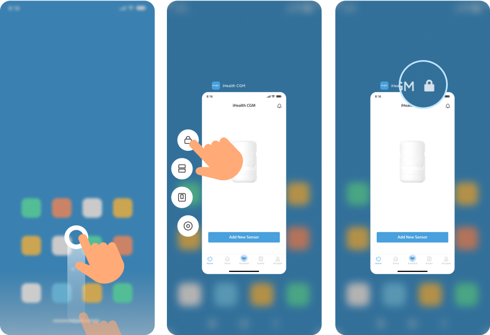

Notification Bar Foreground Run
Allows foreground runs to maintain a more stable connection to the device.
Ignore Battery Optimisation
Add a Battery Optimization whitelist to prevent your system from shutting down the app by mistake.
Setting up Background Running
Find out how to set up the background operation according to your mobile phone model.
Phone Model
{{phoneList[phoneIndex].cont}}
Turn Off Sleep Standby Optimization
Go to “Settings > Battery > More Settings > Turn off Sleep Standby Optimization”.
Go to “Settings > Battery > More Settings > App Battery Management > iHealth CGM > Allow Background Activity” to make sure the app updates blood glucose information in time.
Turn on Self-Start Management, the app can run continuously in the background.
Lock The App (Recommended)
1.Tap “” at the bottom of the screen;
2. Press and hold “iHealth CGM” and “” will appear on the “iHealth CGM”.
1. Slowly pull up from the bottom of your phone's screen to enter the recently opened apps page.
2. Press and hold “iHealth CGM” and “” will appear on the "iHealth CGM."
